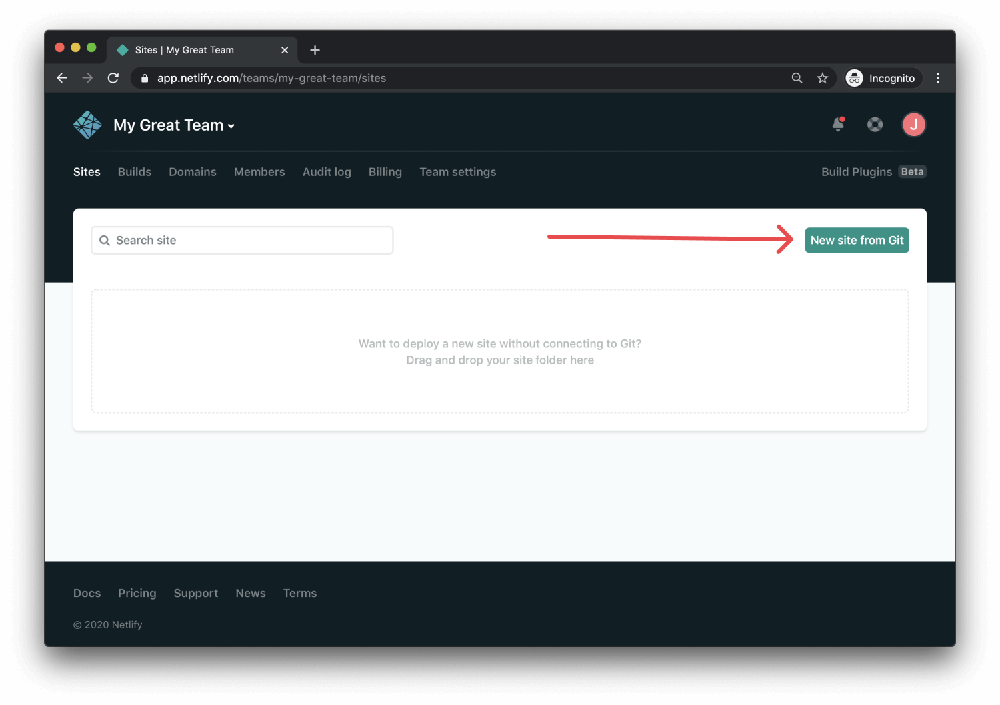
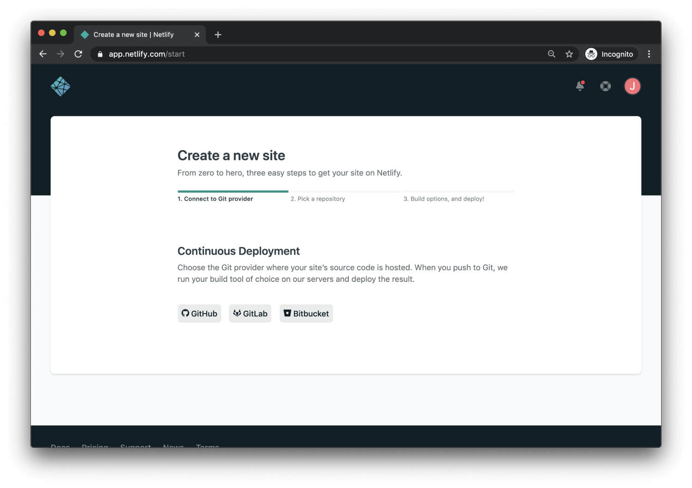
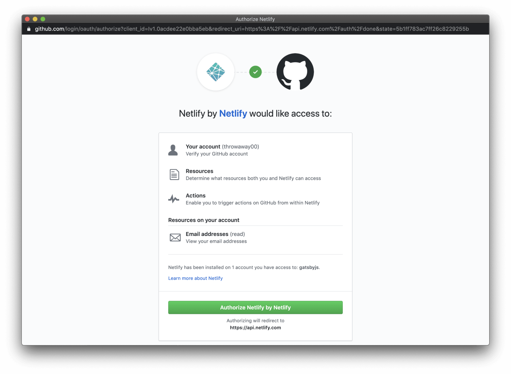
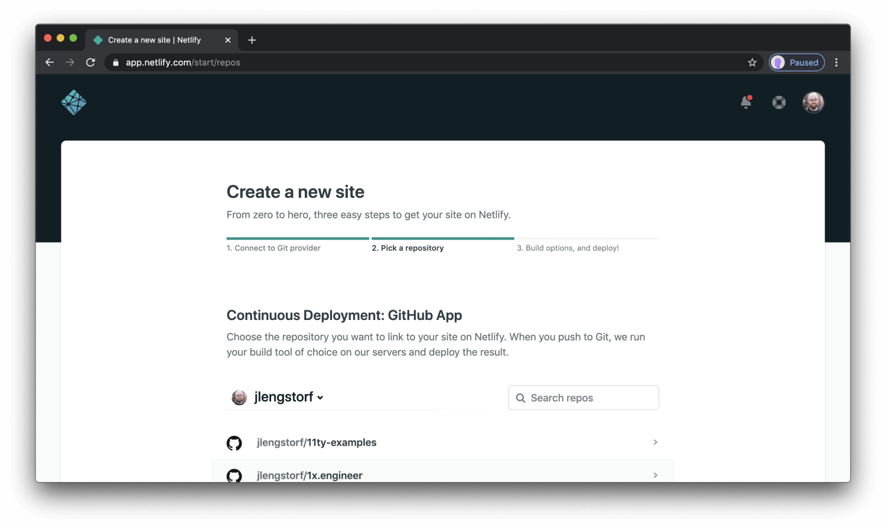
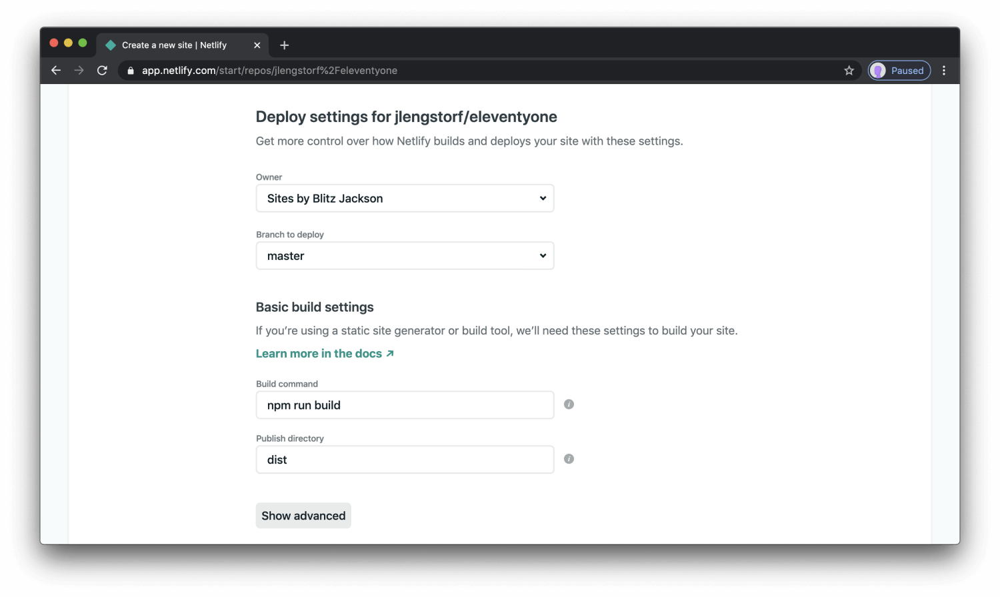
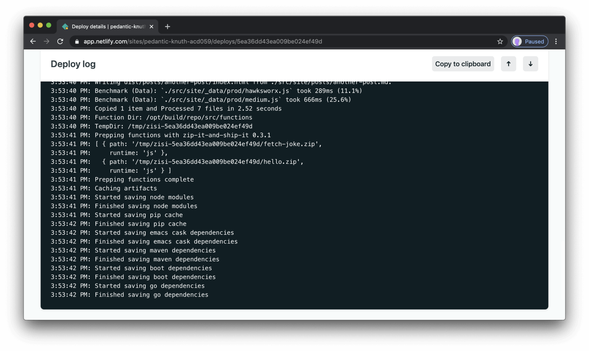
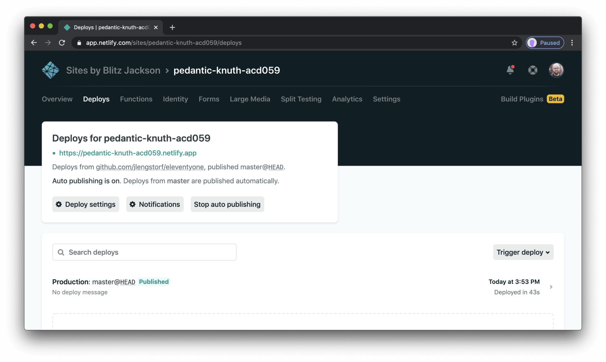

-
Step 1: Add Your New Site
Creating a new site on Netlify is easy. Once logged in, there is only one option, Click the Add New Project button.
 -
Step 2: Link to Your GitHub (or supported version-control tool of choice)
Make sure you push your repo on GitHub, after that all we will need to do is connect Netlify to GitHub. Click the GitHub button as shown.
 -
Step 3: Authorize Netlify
Time to let Netlify and GitHub speak for themselves. Clicking the Authorize Request button will do just that.
 -
Step 4: Select Your Repo
Now that you've connected to Netlify and GitHub, you can see a list of your Git repos. Select the repo you would like to use in the list.
 -
Step 5: Configure Your Settings
Here you can configure your options. Make sure your publish directory is where your public site files are placed after building the site (e.g. dist) and your build command is whatever you run to build the site (e.g. npm run build). Then click the Deploy site button to continue.
 -
Step 6: Build Your Site
Now it's time to sit back and relax. You have done your part; let Netlify take care of everything else. It will only take a minute.
 -
Step 7: All Done
Once build is complete, your site is live! Head to the overview and you can see the URL of your newly published site. Netlify automatically generated a name for your site.
